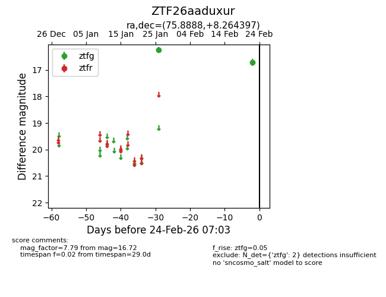
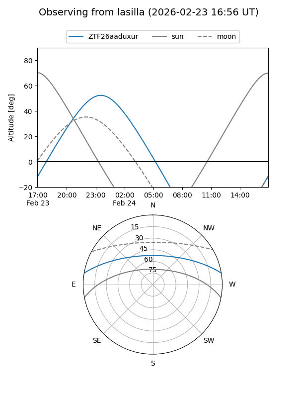
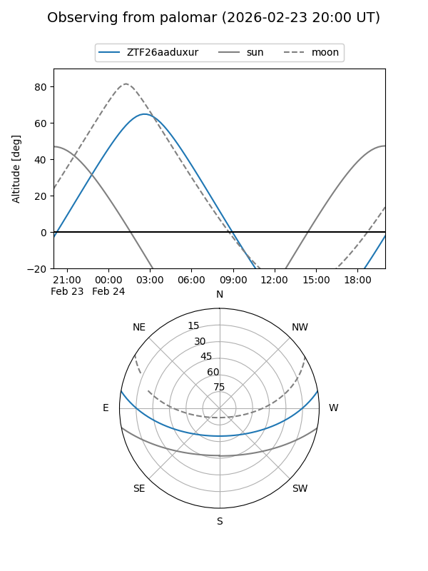

ZTF26aaduxur
Target ZTF26aaduxur at 2026-02-24 09:08
Aliases and brokers:
FINK: link
Lasair: link
ALeRCE: link
alt names
ZTF26aaduxur (ztf,fink_ztf)
Coordinates:
equatorial (ra, dec) = 75.8888,+8.26440
equatorial (HMS+DMS) = 05:03:33.32,+08:15:51.83
galactic (l, b) = (192.2711,-19.50592)
Flags:
Photometry:
last ztfg=16.72
2 ztfg detections
Lightcurve

Visibility


Additional plots